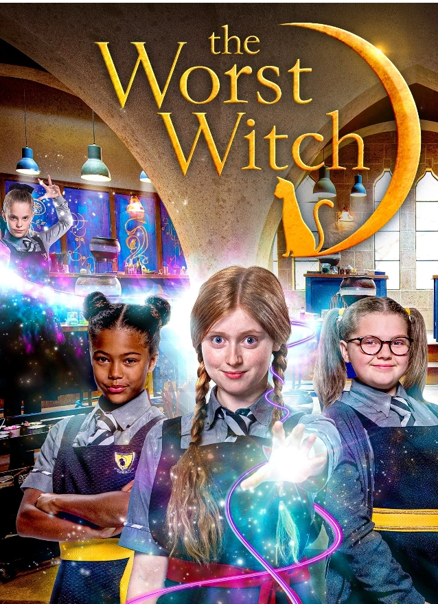

Fantasy
The Worst Witch
1 Chapter · 1 min read
Synopsis
(1986) is a whimsical musical fantasy about Mildred Hubble, a clumsy student at a witch academy. Despite her constant magical mishaps and a ruthless school bully, Mildred must save the school when a sinister plot threatens it before Halloween.
Chapter 1: The Worst Witch at Miss Cackle's Academy
Mildred Hubble (Fairuza Balk) is widely considered the absolute "worst witch" at Miss Cackle’s Academy for Witches because she constantly fails her spells, crashes her broomstick, and ruins potions.
Her life is made even more difficult by her strict deputy headmistress, Miss Hardbroom (Diana Rigg), and the relentless bullying of her snobbish classmate, Ethel Hallow (Anna Kipling), who ultimately sabotages Mildred’s broomstick performance ahead of a grand Halloween assembly.
Feeling hopeless after a disastrous, public embarrassment in front of the revered Grand Wizard (Tim Curry), Mildred decides to run away from school into the surrounding forest. There, she accidentally uncovers a secret plot orchestrated by Agatha Cackle (Charlotte Rae), the evil twin sister of the school's kind headmistress, who plans to infiltrate the academy, turn everyone into toads, and take over.
Armed with this critical knowledge, Mildred returns to the school, successfully uses her magic to foil Agatha's wicked group, saves the academy, and is honored as a true hero by the Grand Wizard and her fellow classmates.